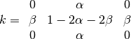
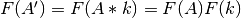
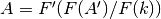

See also
Further information may be found in Ingraham et al. 2014 “Gemini Planet Imager Observational Calibrations II: Detector Performance and Characterization”
The basic algorithm used here is adapted from McCullough 2008 “Inter-pixel Capacitance: Prospects for Deconvolution”
As in most near-infrared detectors, GPI’s H2RG shows signs of interpixel capacitance. IPC is a form of cross-talk that spreads charge from the pixel in which it was collected to the adjacent pixels prior to readout. This is most evident as “crosses” surrounding bright pixels. Cosmic rays and hot pixels will therefore effect a larger percentage of your the array. While obvious in dark frames and point sources, in extended sources IPC can make the Poisson noise appear lower than it really is.
Excerpt of a GPI dark with pixels showing the effects of interpixel capacitance.
The tell-tale cross from IPC can be described as the true image  convolved with a 3x3 kernel
convolved with a 3x3 kernel  . The sum of all 9 elements in the kernel is 1, with the fraction of capacitance along columns given by
. The sum of all 9 elements in the kernel is 1, with the fraction of capacitance along columns given by  , and rows by
, and rows by  .
.

The observed image is then the true image convolved with the IPC kernel:

The true image can be recovered by performing a Fourier deconvolution:


The effects of interpixel capacitance can be removed using the pipeline primitive ‘Correct for Interpixel Capacitance’. This is currently not included by default in any reduction recipe, but may be added by the user. IPC correction should be done as early as possible. The primitive sets default values for and which can be adjusted by the user, if necessary.
The same pixels as above, after correcting for IPC.
The effects of interpixel capacitance may at first appear to be due to charge diffusion. Unlike IPC and other forms of crosstalk, charge diffusion is caused by electrons in the detector migrating to adjacent pixels. Different wavelengths of light will create charges at different depths in the detector. IPC, on the other hand, is not wavelength dependent. There is also the possibility that IPC in the GPI detector will evolve with time.
Douglas Long, Marshall Perrin, Patrick Ingraham